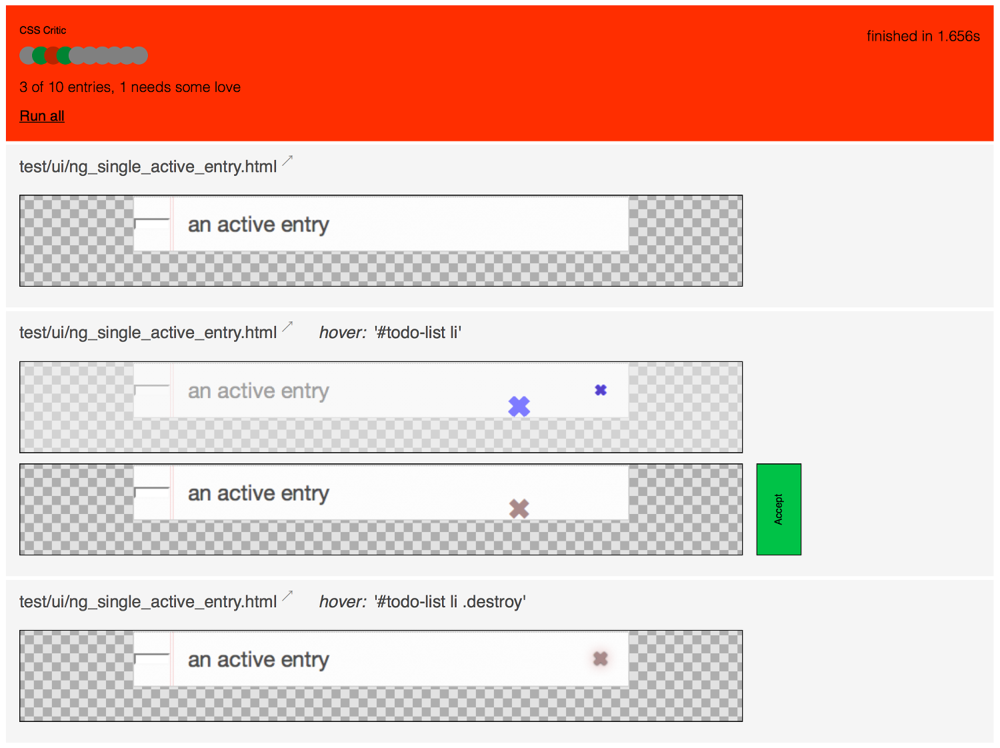

Helping you set up CSS Critic with your project
View the Project on GitHub cburgmer/csscritic-examples
Integrating CSS Critic into your project isn't difficult. But it helps to have an example to look at, doesn't it?
Here's a list of examples currently featured here:

Licensed under MIT.